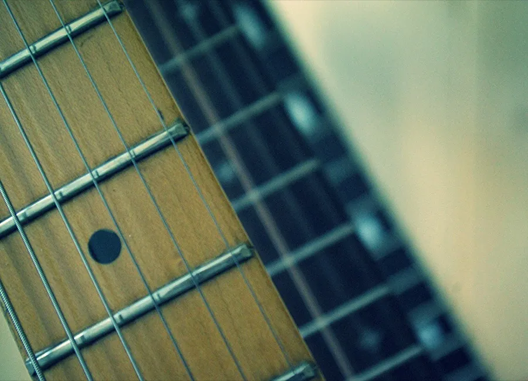
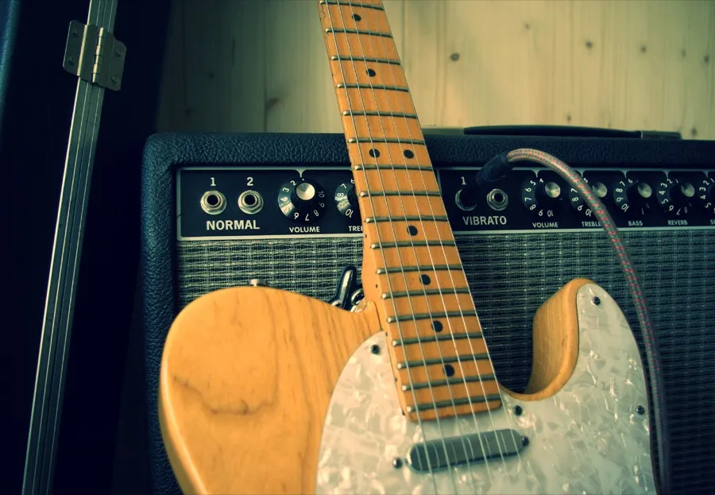

Des cours de guitare sur-mesure
Un programme adapté à votre niveau technique actuel, qui s'appuie avant tout sur votre univers et vos goûts musicaux.

Un accompagnement musical global
Une formule évolutive pour élargir vos horizons, gagner en autonomie et atteindre vos nouveaux objectifs. Chaque cours est individuel et personnalisé.
Niveau 1
Pour les débutants
Il n'y a pas d'âge pour se mettre à la guitare ni de prérequis si ce n'est l'envie. Ce cours s'adresse à tous les débutants motivés.
Très vite vous devriez être en mesure de jouer vos premiers accords, puis une première chanson, une deuxième… Patience, travail et assiduité feront le reste et seront la clé de vos progrès et plaisir de jouer.
Selon votre assiduité aux cours et votre investissement personnel entre les cours, vous devriez pouvoir jouer vos premiers morceaux dès la première année !

Les fondamentaux abordés
La guitare peut sembler être un instrument difficile d'accès dans les premiers temps. Pour vous initier dans les meilleures conditions possibles, nous aborderons ensemble ces quelques fondamentaux.
- Adopter une bonne posture corporelle globale et des deux mains en particulier pour faire corps avec son instrument, faciliter l'approche technique et ancrer de bonnes habitudes.
- Accorder son instrument avant de jouer.
- Jouer des mélodies et des accords simples pour s'acclimater et déjà jouer !
- Aborder le rythme de façon ludique, avec et sans la guitare.
- Lire des partitions simples de solfège et tablatures, les diagrammes et chiffrages d'accords.
Les supports fournis
Sur feuilles A4. Des partitions simples de solfège et tablatures de guitare, des chiffrages et diagrammes d'accords, quelques fiches théoriques et pratiques.
En mp3. Des mémos audio enregistrés en séance, détaillant les parties guitare vues ensemble pour pouvoir se les remettre dans l'oreille et bien s'exercer seul.
Prévoir un porte-vue A4.
Votre implication
Pour bénéficier pleinement de votre cours particulier et bien vous initier à la guitare, je vous recommande de vous exercer au moins 15 à 20 minutes par jour ou encore tous les deux jours si votre vie professionnelle et familiale est intense.
Il est bien plus efficace de pratiquer régulièrement par séquences courtes que de s'acharner à l'occasion, tout un samedi après-midi par exemple. Quant à attendre la veille du cours suivant pour sortir sa guitare, cela revient quasiment au même que de ne pas la sortir du tout...
En résumé, s'offrir des leçons n'a de sens que si vous pratiquez entre chaque séance, à l'idéal quotidiennement. Vos progrès seront alors effectifs et palpables, pour notre plus grande satisfaction réciproque.
Niveau 2
Pour les faux débutants
Vous grattez quelques accords, accompagnez une poignée de chansons, depuis longtemps ou depuis peu. Vous rencontrez des difficultés rythmiques et techniques qui vous privent d'un jeu fluide, indispensable à acquérir pour jouer vos accompagnements sans accroc du début à la fin.
La frustration est prégnante et bien sûr le découragement vous guette... Basta ! Aujourd'hui vous prenez les choses en main, vous vous fixez comme nouvel objectif de jouer avec plus d'aisance et de plaisir, d'assurer un minimum à la guitare et d'étoffer votre répertoire. Ces cours sur-mesure s'adressent à vous !

Comment nous travaillons
Lors de nos premiers échanges, vous me transmettez une liste de titres que vous avez envie de jouer. J'en choisis un premier adapté à vos capacités techniques du moment et vous propose un accompagnement guitare, plus ou moins simplifié pour vous permettre de l'intégrer rapidement.
Nous travaillons le morceau ensemble partie par partie, puis dans sa globalité. Nous nous concentrons aussi plus largement sur le rythme et son ressenti, véritable nerf de la guerre dans la pratique musicale. Votre assiduité aux cours et votre implication entre les cours feront le reste. Vous améliorerez sensiblement votre jeu de guitare et prendrez de l'assurance à jouer votre répertoire ainsi constitué au fil du temps.
Les genres musicaux
Concernant les chansons, je peux répondre à vos envies sur ces genres.
- Chanson française
- Pop
- Folk
- Rock
- Blues
- Soul
- Reggae
- Jazz
- Bossa nova
Au gré des morceaux appris, les notions élémentaires de solfège rythmique auront été intégrées, ainsi que la lecture des chiffrages d'accords, indispensable pour s'en sortir avec les accords parfois approximatifs trouvés sur le Web ou pour aborder plus sereinement les partitions du commerce.
Les supports fournis
Sur feuilles A4. Les textes des chansons, les partitions adaptées avec tablatures de guitare et chiffrages d'accords.
En MP3. Des mémos audio enregistrés en séance, détaillant les parties guitare vues ensemble pour pouvoir se les remettre dans l'oreille et bien s'exercer seul.
Prévoir un porte-vue A4.
Votre implication
Pour bénéficier pleinement de votre cours sur-mesure et parvenir à jouer vos accompagnements correctement, je vous recommande de vous exercer au moins 15 à 30 minutes par jour. Et ce faisant, amusez-vous ! Si votre vie professionnelle et familiale est intense, essayez de maintenir vos séances au moins tous les deux jours.
Il est bien plus bénéfique de pratiquer régulièrement par séquences courtes que de s'acharner à l'occasion, tout un samedi après-midi par exemple. Quant à attendre la veille du cours suivant pour sortir sa guitare, cela revient quasiment au même que de ne pas la sortir du tout...
En résumé, s'offrir des leçons n'a de sens que si vous pratiquez entre chaque séance, à l'idéal quotidiennement. Vos progrès seront alors effectifs et palpables, pour notre plus grande satisfaction réciproque.
Niveau 3
Pour les guitaristes ambitieux
Ces séances sur-mesure s'adressent à des guitaristes de niveau intermédiaire à plus avancé, résolument motivés pour évoluer dans la pratique de la guitare moderne et des musiques actuelles.
En nous appuyant sur votre parcours, vos influences musicales et vos objectifs, nous mettons en place un programme adapté, visant à renforcer votre autonomie de travail et votre développement musical, nécessaire à tout guitariste passionné et ambitieux.
L'harmonie appliquée à la guitare est au cœur de nos échanges. À chaque séance, le jeu à deux guitares nous permet d'intégrer tout de suite sur l'instrument les notions abordées. Nous portons une attention sans relâche sur l'assise et le placement rythmique, le toucher et la qualité du son. Quant à la technique instrumentale, elle est abordée par le prisme des styles musicaux traités.

Quelques pistes de travail
- Le rythme. Pulsation, assise rythmique, placements, jouer binaire, ternaire.
- Subdivisions rythmiques, la main droite du guitariste.
- Structures tonales majeure et mineures, progressions harmoniques, cadences.
- Accords. Constructions, renversements, enrichissements, altérations, chiffrages.
- Les gammes de l'harmonie tonale, majeure et mineures, les arpèges et triades.
- Les gammes pentatoniques majeure et mineure, leurs utilisations.
- Les modes. Concept et approches du jeu modal.
- Pistes de travail pour l'improvisation.
- Le manche de la guitare. Intervalles et connexions.
- Techniques de jeu aux doigts et au médiator.
- Études de styles. Blues, jazz, bossa nova, funk, reggae, rock...
- Avoir le son en toutes circonstances.
- Choisir ses effets, les comprendre et optimiser leurs utilisations.
- Préparer ses répétitions et ses concerts.
- S'enregistrer chez soi. Échanges et conseils sur le travail en home studio.
Les supports fournis
Sur feuilles A4. Partitions, grilles, diagrammes d'accords, doigtés d'arpèges et de gammes, fiches pratiques sur la théorie musicale et l'harmonie fonctionnelle.
En MP3. Les mémos audio enregistrés en séance, des play-alongs pour pratiquer les gammes, développer son phrasé et l'improvisation chez soi, des exports de boîte à rythmes pour travailler son assise rythmique et ses rythmiques dans différents styles.
Prévoir un porte-vue A4.
État d'esprit
Motivation et grande implication indispensables. Ambiance studieuse et détendue, plaisir musical au rendez-vous !
Coaching
Pour les artistes solo et les groupes amateurs
Un éclairage extérieur constructif et structurant pour aider votre projet à franchir un cap.
Depuis 2019, j'accompagne des artistes solo et des groupes amateurs dans le développement de leur projet, tant sur le plan artistique que sur les aspects techniques (matériel, gestion du son).
En déplacement sur votre lieu de répétition, les interventions de coaching peuvent avoir lieu en soirée ou le weekend pour s'adapter à votre planning de groupe et à la disponibilité des locaux.
Le tarif horaire plancher de 27 € à partir de 4 heures de prestations mensuelles s'applique aussi aux sessions de coaching et aux conseils techniques. Voir les tarifs

Les sessions de travail du vendredi
Certains vendredis peuvent être consacrés à l'accueil d'un élève ou d'un artiste qui souhaite bénéficier d'une session de travail conséquente (4 à 8 heures).
- Votre projet de création musicale (aide à la composition et arrangements guitare).
- Une préparation de concert (répertoire et enchaînements des titres, gestion des dynamiques et du son, réflexion sur la posture corporelle, la présence scénique, le trac).
- Une thématique précise approfondie (rythme, harmonie, improvisation).
- Le son du guitariste électrique (les pédales d'effets et leurs fonctionnements, l'optimisation d'un pedalboard personnalisé).
Un projet de cours ou de coaching ?
Je reste à votre entière écoute par téléphone ou par e-mail pour échanger sur vos attentes et vos projets.